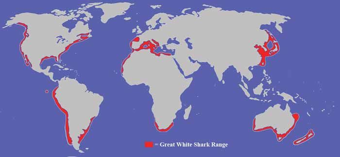

Global distribution
Great white sharks occur in temperate and some subtropical coastal waters around the world. They are frequently recorded off South Africa, Australia, New Zealand, the United States and parts of the Mediterranean. Individuals may travel thousands of kilometres between feeding grounds and breeding areas.

Hunting strategies
In some regions, great white sharks use ambush tactics, approaching seals from below and behind before launching rapid vertical attacks. Their pale underside makes them difficult to see when viewed from below against the bright surface. They also scavenge on whale carcasses and may investigate a variety of objects in the water.
Migration and movement
Satellite tagging studies have revealed complex migration routes, including long-distance journeys across ocean basins. Some individuals return to the same coastal areas seasonally, suggesting that they follow predictable patterns of prey availability. These movements highlight the need for international cooperation in shark conservation.
Social behaviour
Great white sharks are often considered solitary, but they do interact at feeding sites and along migration routes. At carcasses or seal colonies, individuals may establish temporary hierarchies based on size and dominance. These interactions can influence which sharks gain access to food and how long they remain in an area.